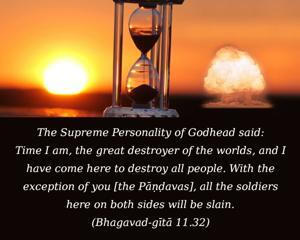
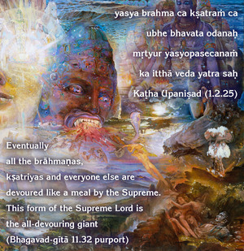

The Supreme Personality of Godhead said: Time I am, the great destroyer of the worlds, and I have come here to destroy all people. With the exception of you [the Pāṇḍavas], all the soldiers here on both sides will be slain.


Although Arjuna knew that Kṛṣṇa was his friend and the Supreme Personality of Godhead, he was puzzled by the various forms exhibited by Kṛṣṇa. Therefore he asked further about the actual mission of this devastating force. It is written in the Vedas that the Supreme Truth destroys everything, even the brāhmaṇas. As stated in the Kaṭha Upaniṣad (1.2.25),
yasya brahma ca kṣatraṁ ca
ubhe bhavata odanaḥ
mṛtyur yasyopasecanaṁ
ka itthā veda yatra saḥ
Eventually all the brāhmaṇas, kṣatriyas and everyone else are devoured like a meal by the Supreme. This form of the Supreme Lord is the all-devouring giant, and here Kṛṣṇa presents Himself in that form of all-devouring time. Except for a few Pāṇḍavas, everyone who was present on that battlefield would be devoured by Him. Arjuna was not in favor of the fight, and he thought it was better not to fight; then there would be no frustration. In reply, the Lord is saying that even if he did not fight, every one of them would be destroyed, for that was His plan. If Arjuna stopped fighting, they would die in another way. Death could not be checked, even if he did not fight. In fact, they were already dead. Time is destruction, and all manifestations are to be vanquished by the desire of the Supreme Lord. That is the law of nature.